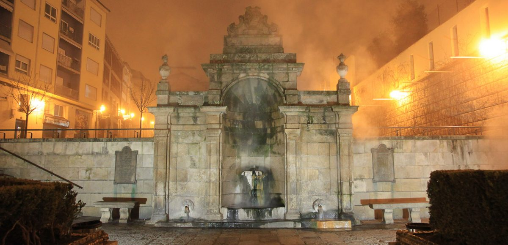
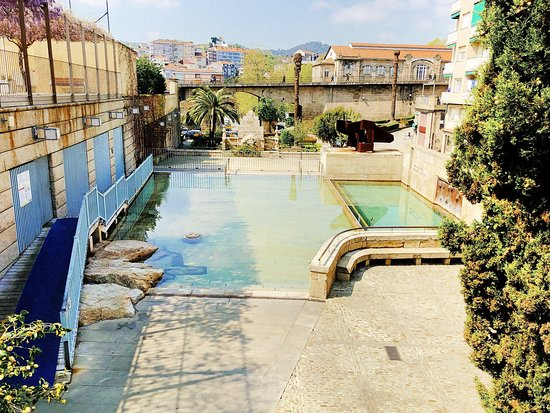

Lendas
As Burgas



Ficha rápida
- Lugar: As Burgas (Ourense)
- Que son? Mananciais de auga termal que brotan a máis de 60 ºC.
- Lendas: Casar cun ourensán ao meter as mans, un volcán baixo a cidade e as propiedades curativas da auga.
A lenda
Hoxe a xente coñece á súa parella por Tinder. En Ourense, segundo a lenda, é moito máis fácil: metes as mans nas Burgas e acabas casando cun ourensán. A verdade é que eu prefiro non comprobar se funciona. Xa lle direi a Carol que meta as mans ela e, se dentro duns anos aparece cun ourensán, prometo actualizar esta entrada.
Bromas á parte, esta é só unha das lendas que rodean As Burgas, seguramente o lugar máis emblemático de Ourense. Hai outra que di que toda esa auga tan quente sae porque debaixo da cidade hai un volcán durmido que algún día pode espertar. E a máis coñecida asegura que as súas propiedades curativas proceden directamente da Capela do Santo Cristo da Catedral.
O curioso é que, máis alá das lendas, As Burgas levan formando parte da historia de Ourense desde hai case dous mil anos. Xa os romanos aproveitaban estas augas termais para os seus baños e arredor delas foi medrando a antiga Auria, a cidade que deu lugar á actual Ourense.
Tamén descubrín un dato que me fixo bastante graza: antigamente as aldeás aproveitaban a auga das Burgas para escaldar os polos e quitarlles as plumas moito máis rápido. Ao final, cada un usaba as augas quentes para o que máis lle conviña.
Creo que iso é o que máis me gusta das Burgas. Nun mesmo sitio mestúranse historia, lendas e costumes de toda a vida.
Bibliografía
As Burgas. Mitos, lendas e contos galegos. (s. f.)
https://galiciaencantada.com/lenda.asp?cat=9&id=153
As Burgas: Termas con historia – Turismo de Ourense. (s. f.)
https://ourense.gal/turismo/termalismo/termas-e-historia/